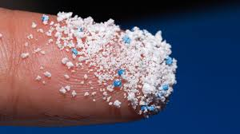
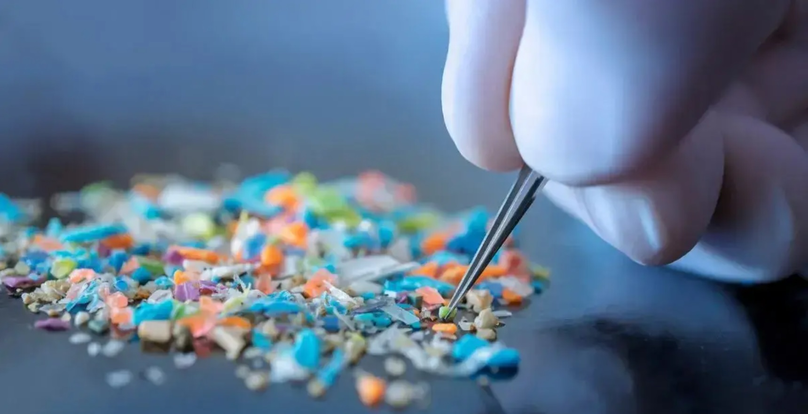

Tiny pieces accumulate within your stomach to kill you
What are microplastics?
Microplastics are small particles and are found in products like microbeads in personal care items (e.g., toothpaste, facial scrubs) and pre-production plastic pellets.
How do they impact us?
Microplastics enter our bodies through food, water, and air, carrying toxic chemicals like BPA and phthalates that can disrupt hormones, trigger inflammation, and transfer pathogens. Additionally, they pollute water sources and often bypass filtration systems, making them hard to remove from drinking water.
